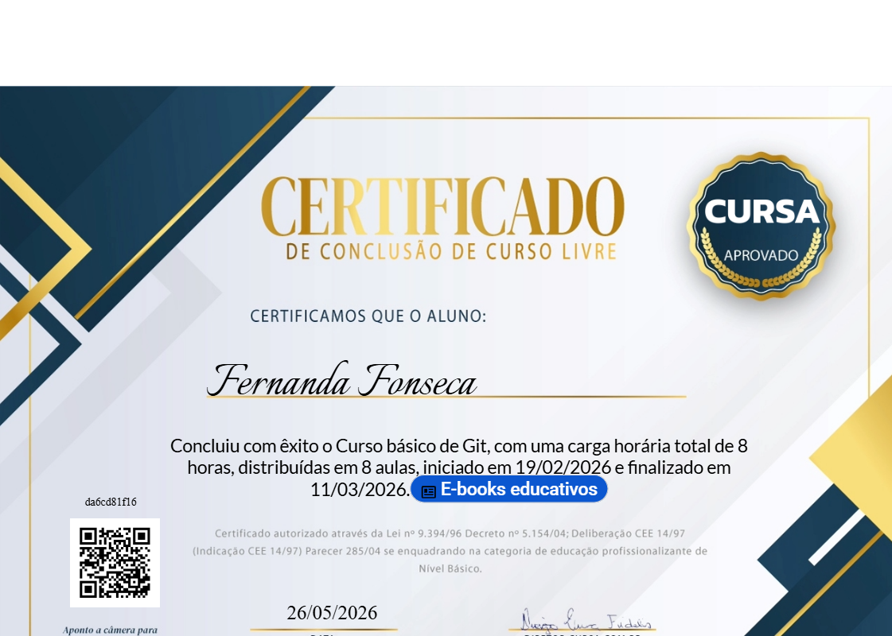
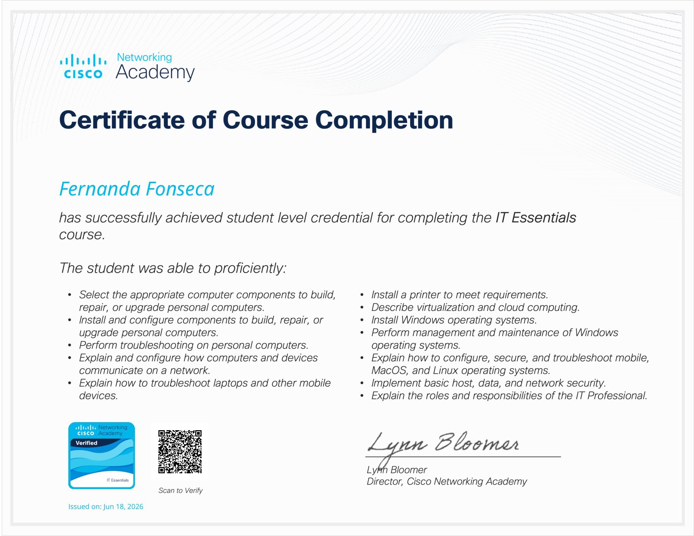
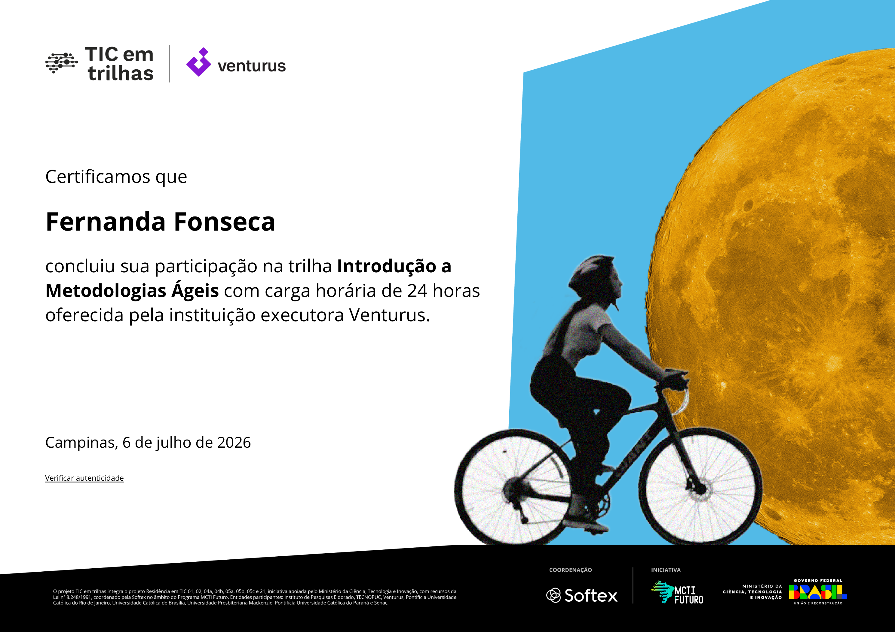

Aprender
Complemento a faculdade com cursos e certificações em Git, IT Essentials e Metodologias Ágeis, e aplico o que aprendo em projetos práticos.
Olá, eu sou a
Desenvolvo aplicações web do protótipo no Figma à API com banco de dados, e organizo equipes com Scrum para que o projeto chegue à entrega.
Sobre mim
Estou no 2º semestre de DSM na FATEC Jacareí. Nos projetos integradores, já atuei como desenvolvedora front-end e como Scrum Master, e gosto de estar nos dois lados: construindo a interface e garantindo que o time entregue.
Complemento a faculdade com cursos e certificações em Git, IT Essentials e Metodologias Ágeis, e aplico o que aprendo em projetos práticos.
Desenvolvo interfaces com HTML, CSS, JavaScript e React, e APIs em Node.js com Express e PostgreSQL, sempre com repositório e documentação.
Como Scrum Master, conduzo as cerimônias, mantenho backlog e documentação atualizados e acompanho prazos e responsáveis de cada entrega.
Projetos
Projetos integradores da FATEC, estudos pessoais e, em breve, experiências profissionais.
Projetos desenvolvidos durante a formação na FATEC.
Plataforma web que estima o impacto ambiental de aplicações hospedadas. A partir de métricas de CPU, memória, disco e rede, calcula o consumo de energia e as emissões de CO₂e considerando a matriz elétrica da região do servidor, com dashboard, histórico, ranking, comparação entre serviços e mapa 3D.
Conduzi as dailies, as sprint reviews e o planejamento das três sprints da equipe Green Stack, mantive o Product Backlog, os Sprint Backlogs e o plano de entregas, e distribuí as tarefas com responsáveis e prazos. Fui responsável pela documentação técnica: README principal, arquitetura e modelo de dados, documentação da API e os READMEs do front-end e do back-end. No desenvolvimento, implementei a tela de início e a configuração das rotas entre as telas com o cliente HTTP, prototipei a tela de histórico e os estados visuais da interface, e atuei na revisão e aprovação de pull requests e nos testes do sistema.
Plataforma web da equipe TechFellas para o ensino de Scrum: cinco módulos de questionários com limite de tentativas e emissão de certificado de conclusão ao final.
Desenvolvi grande parte do front-end. No Figma, criei as telas de questionário (desktop e mobile), de certificado e a página 404. No código, implementei a página de módulos com layout responsivo, a página 404 e o sistema de avisos e alertas com verificação, além de padronizar o CSS da tela de resultado. No back-end, escrevi os testes automatizados do questionário com Jest e fiz os diagramas da documentação.
Portal do curso de Desenvolvimento de Software Multiplataforma com página institucional (grade curricular e objetivos do curso), telas de login e cadastro e página 404, publicado na web.
Desenvolvi as páginas e o layout responsivo, as telas de login e de cadastro com confirmação de senha e o servidor em Node.js com Express que integra as rotas entre o front-end e o back-end.
Espaço reservado para os próximos projetos integradores e atividades desenvolvidas durante o curso.
Experiências profissionais que poderão ser incorporadas ao longo da trajetória.
Esta área está preparada para receber projetos, experiências e contribuições profissionais futuras.
Espaço para experimentos, estudos e projetos desenvolvidos por iniciativa própria.
Aplicação web para cadastrar, listar e excluir usuários, com API própria e banco de dados relacional.
Criei uma API REST em Express com as rotas GET, POST e DELETE de /users, conectada ao PostgreSQL e organizada em camadas (rotas e acesso a dados). A interface, em JavaScript puro, consome a API com fetch e atualiza a lista sem recarregar a página.
Aplicação web que consulta endereços brasileiros pelo CEP usando a API pública do ViaCEP.
Implementei a consulta ao ViaCEP com fetch e async/await, o tratamento do JSON retornado e o preenchimento automático dos campos de endereço no formulário. A aplicação é servida por um servidor Express.
Aplicação Full-Stack para cadastrar e listar palpites da Mega-Sena, com validação das dezenas e persistência em banco.
Desenvolvi a validação das 6 dezenas no front-end, os estados de carregamento, sucesso e erro da interface e a API em Express (GET e POST de /senas) com persistência no PostgreSQL. Documentei o fluxo da aplicação com diagramas de sequência UML.
Aplicação web que consulta resultados de concursos da Mega-Sena a partir da base oficial da CAIXA e confere os acertos do usuário.
Importei a base oficial de resultados da CAIXA (CSV) para o PostgreSQL com scripts próprios de schema e seed. Criei os endpoints de último concurso e de concurso por número, com tratamento de erros (400, 404 e 500), e a lógica de conferência de acertos na interface.
Conhecimentos
Tecnologias estudadas e utilizadas ao longo da formação e dos projetos.
Informações complementares
Certificações, conhecimentos, interesses que complementam minha trajetória e formação.
Certificações e cursos concluídos ao longo da formação.



Desenvolvimento web front-end e back-end, APIs REST, bancos de dados relacionais, versionamento com Git, Scrum, prototipação no Figma e testes automatizados.
Tecnologia, desenvolvimento web, aprendizado contínuo, design de interfaces e projetos criativos.
Contato profissional
Para acompanhar meus projetos e trajetória profissional, acesse minhas redes profissionais.